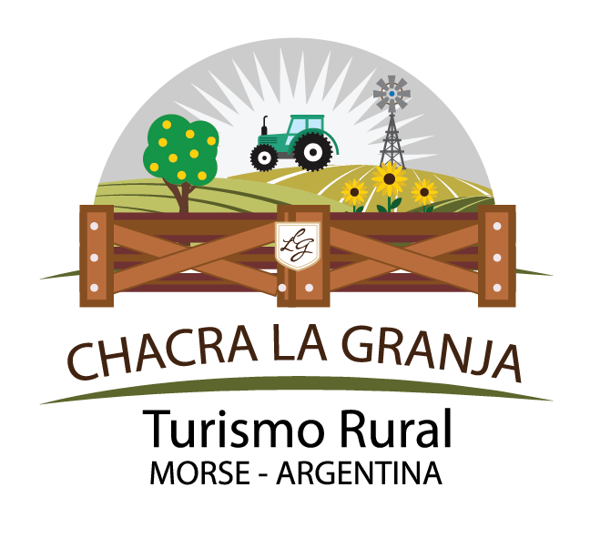
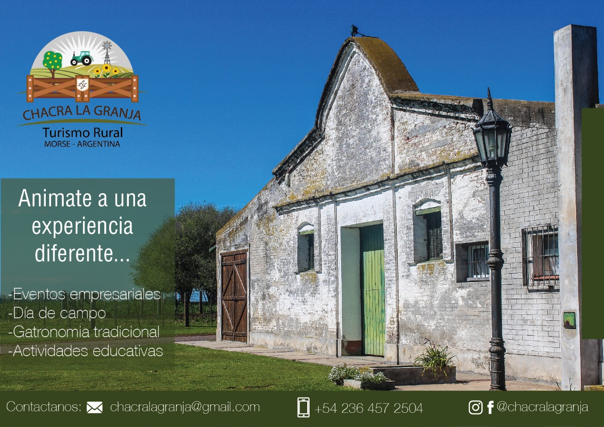

Chacra La Granja 
Para disfrutar en familia




¿Quienes somos?
Las propuestas para los turistas son variadas y estamos abiertos a escuchar más. Tenemos un galpón grande acondicionado para eventos hasta 160 personas, con cocina y baños, donde lo ofrecemos, además, para todos aquellos que quieran alquilarlo. El lugar se mezcla con el verde césped del jardín de la chacra, rodeado de hermosas flores, lo cual hace pensar en la instalación de carpas para ampliar el número de invitados.
Servicios
Tenemos dos opciones:
- Dia de Campo: entre las 11.30 y las 18.30, almuerzo con entrada de fiambre casero, empanadas, asado criollo, postre casero y merienda.
- tarde de campo, entre las 15 y las 18.30, con infusiones (té, café, bebidas, tortas caseras, pastelitos, tortas fritas y pastafrola. Además se organizan eventos sociales, como cumpleaños, casamientos, despedidas y eventos empresariales, para que las empresas puedan mostrar los productos o realizar muestras y ensayos a campo abierto.
Ubicación
Nos encontramos en la zona del Cuartel V, Morse, en el km 120.9 de la Ruta Provincial 46, te dejamos nuestro mapa para una mejor Ubicación.
CLICK AQUI PARA ABRIR MAPA